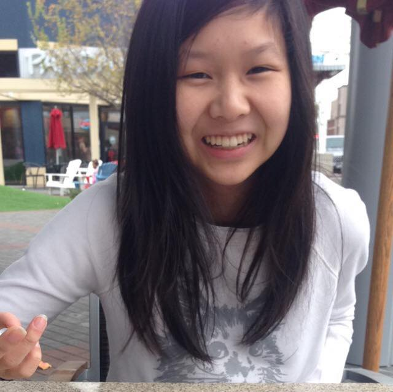

Cindy Huynh
Just me being me! Full of randomness, weirdness, and fun!
About Me
Hello! People say I am "lowkey highkey funny". I do not believe so, because I think I am highkey funny all the time. Oh right, back to the introduction. My name is Cindy Huynh. I am currently a senior at Encinal High School in Alameda, California. My hobbies consists of a wide variety of activities. One of my specialties that I excel at is messing with people. It is just SOOO fun getting reaction out of them. I love messing around with my friends at school. They are just so easy to mess with and their reactions are very funny. Sorry, I just went off topic again. So my favorite hobbies are binge watching television shows, hanging out with friends, playing video games, or just something really simple like taking naps or listening to music. From time to time, I also like to think that I can code in Python, C++, HTML, CSS, and Javascript but I am still far from perfection. I am still constantly learning new coding languages and practicing the languages I sorta know already! My physical age is 17 but I get a lot of people telling me I act like I am 12, and that is totally okay! I like to believe that I am very mature for my age, but when I tell people that, they look at me with a funny face and shake their heads subtlety. Although I have an immature side to me, when needed to be serious, I am very focused and can get things done in a very efficient and deliberate manner. If there are any questions, I will be very happy to answer them! I would like to think I am a pretty easy person to talk to, but I'm not sure because I don't really talk to myself so give it a try!
Hello! My name is Cindy Huynh. I am currently a senior at Encinal High School in Alameda, California. I am 17 years old and I was born and raised in the Bay Area. My parents immigrated to America from China and they both did not seek higher education. By leaving their homeland to come to a totally foreign place, my sister and I are able to pursue the higher education that they were not able to receive. This makes it so that I am the second person in my family to pursue higher education after my older sister being the first. I enjoy the simple things in life. Many of those include eating good food, sleeping, listening to music, hanging out with friends, and binge watching TV shows. I can code in Python, HTML, CSS, Javascript, and C++ at a basic level. I am generally very mature and can handle serious matters well, but when appropriate I can also be a total jokester. I have an interest for technology and I am constantly trying to learn new things to do on the computer. Throughout my journey of exploring the different aspects of technology I have taught myself many valuable skills.
Connect with me: